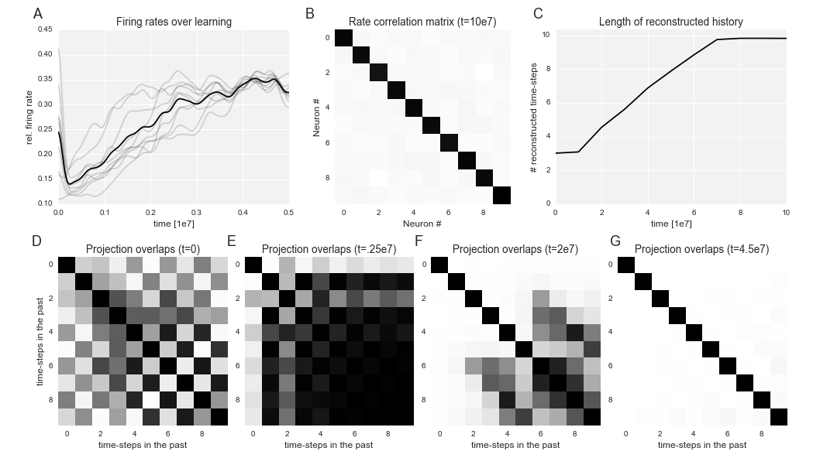

This is the readme for the model associated with the paper: Vertechi P, Brendely W, Machens CK (2014) Unsupervised learning of an efficient short-term memory network Advances in Neural Information Processing Systems 27:1-9 This simulation script reproduces Figure 2 in the paper (implemented as an Ipython Notebook). If you do not have a GPU change the line in cell 2 in the notebook from theano.config.openmp = True to theano.config.openmp = False When you execute all cells in the notebook you will see a panel similar to Figure 2 in the paper: 